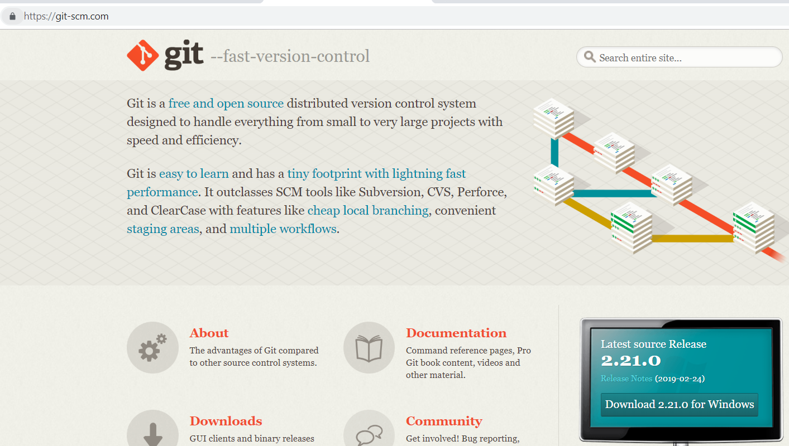
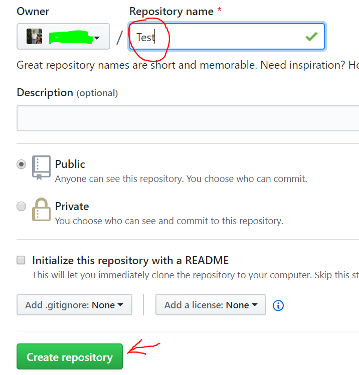
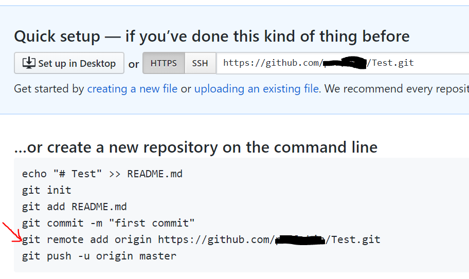
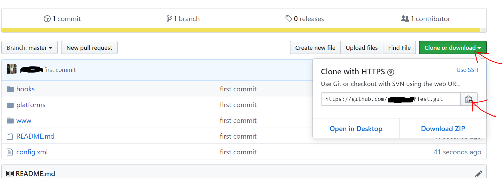

In this chapter, we will learn how to create a github account, install git-scm and also how to create repositories and upload our project to github.
The reason is because, build.phonegap.com will only allow you to upload 1 zipped project directly. If you wanted to upload more, you will have to do it indirectly via github.
Go to github.com and signup for a free account. The github page is shown in Fig 7-1 below.
Next, we need to download a github client that we will need to use to upload the files to github. It is called git-scm. Git-scm is a command line interface (CLI) tool used to communicate with github for purposes of uploading or downloading files. So head over to git-scm.com and download and install it. The git-scm website is as shown in Fig 7-2 below.

After downloading git-scm and installing it and after signing up for a github.com account, we are now ready to go to the next step, which is to create a new repository in github and using git-scm aka git, to upload our project to the repository.
In this section, we will create a new repository on github and then upload our project.
To create a new repository in github, click on the green button ‘New’. You will then see a textbox labelled ‘Repository name’ as shown in Fig 7-3 below.

Give it a name ‘Test’. The default setting is Public. You can’t set Private unless you are a paying account. We want to use github for free, so we need to keep our project Public. After entering the name for our new repository, click on the green button ‘Create repository’. Github will then create a new repository and also show some instructions on how to upload your new file. This is shown in Fig 7-4 below.

The most important line is as indicated by the red arrow in Fig 7-4 above. Copy it. Then, open a cmd command terminal and navigate to your Test project folder:
C:\Users\yourpc\Desktop\Test
The location is different for your machine. So just follow the folder location on your machine. Then, execute these series of commands:
git init
git add .
git commit -m “first commit”
The next command is the one you copied from github.com:
git remote add origin https://github.com/yourname/Test.git
Then finally type the command below to upload the project:
git push -u origin master
Note that after typing in git init, the next command is git add dot. There is a space between add and the dot. So it is like this:
git add .
Once you have successfully uploaded the project files, go ahead and refresh your github page and you will see the new page with the files all uploaded as shown in Fig 7-5 below.

In future, if you wanted to download this project on another different machine, just click on the green button ‘Clone or download’ as shown in Fig 7-5 above, and click on the icon copy button as shown by the second red arrow in Fig 7-5. Then open a terminal and type:
git clone [ paste the line you copied above here ]
It will download an exact copy to your new machine. Then, after making any new changes, if you wish to upload the changes, just execute these series of commands:
git add .
git commit -m “update”
git push
You can also use the same three commands above if you are making changes to the original copy on your original machine where you first created the project. Then, when you go to your second machine, you will need to pull down any updates. You can do this with this command:
git pull
That is all. We will also be using the copied github link to paste into build.phonegap.com when building our apk file in the next chapter. This concludes this chapter. In the next chapter, we will be using build.phonegap.com to create our apk file.